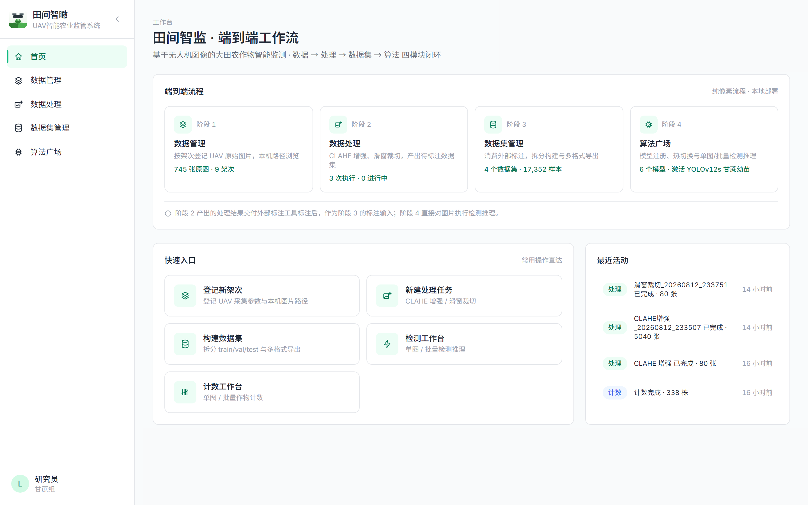
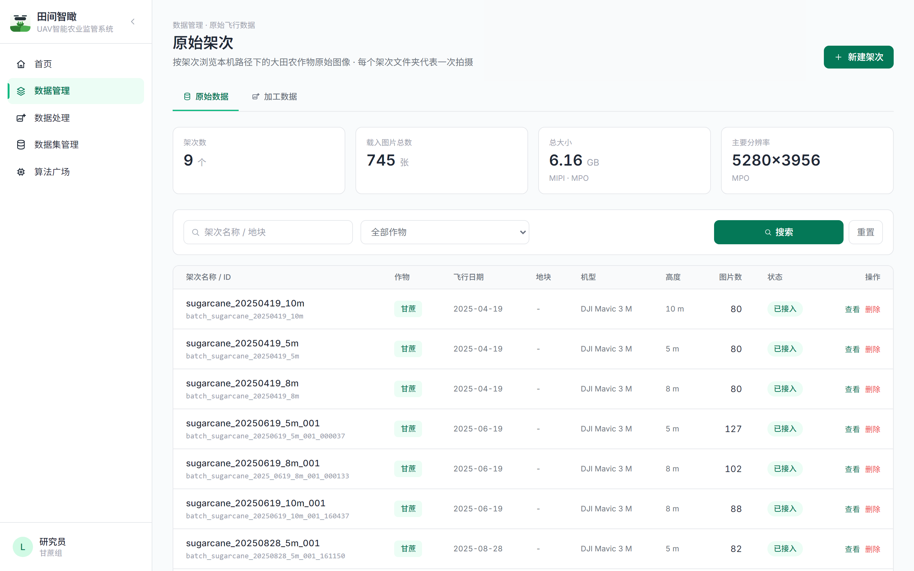
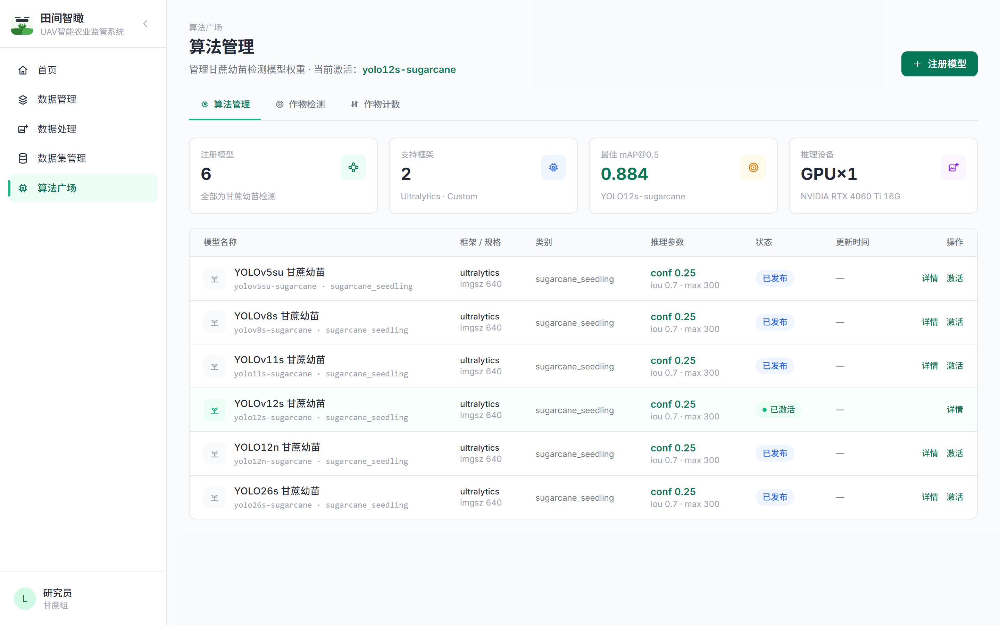
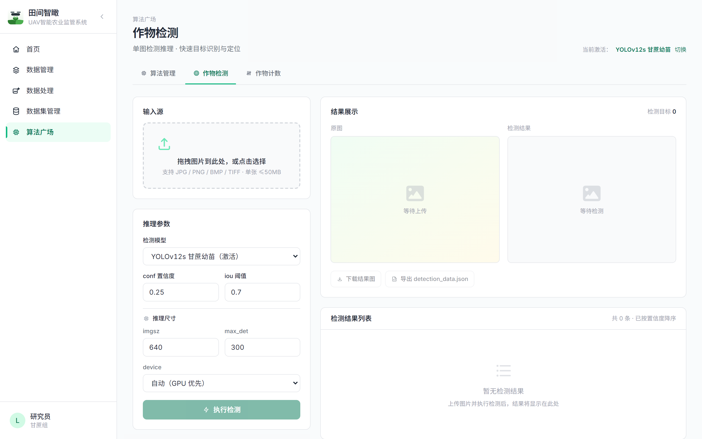
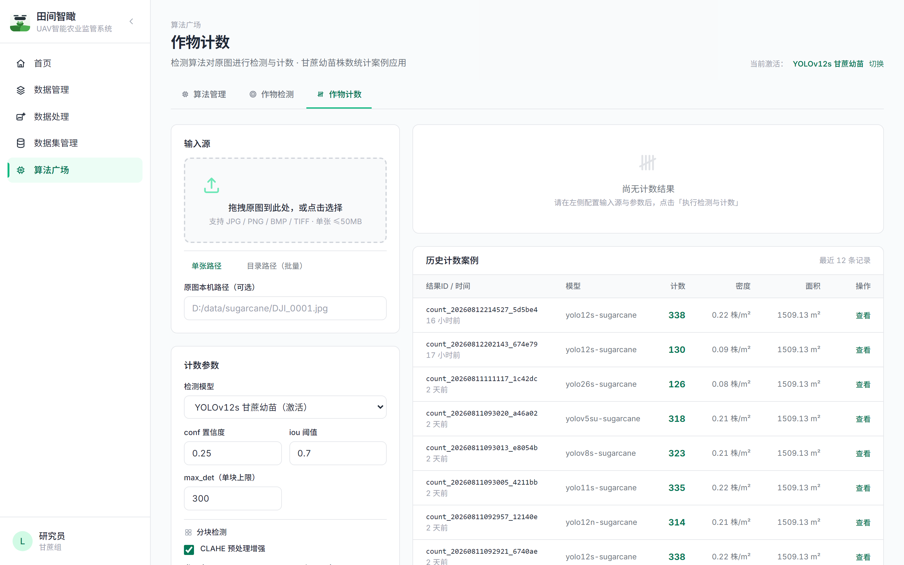

覆盖数据管理 → 数据处理 → 数据集管理 → 算法广场 四模块闭环， V1 阶段以算法广场为核心实现主线，已完成模型注册、作物检测与计数等核心功能。
本研究旨在构建一套基于无人机航拍图像的大田农作物智能监测与管理系统——"田间智瞰"。系统采用 Flask + Vue 3 前后端分离架构，围绕数据管理、数据处理、数据集管理、算法广场四大模块形成完整业务闭环。
当前 V1 阶段已完成算法广场模块的核心真实实现：支持 6 款 YOLO 系列模型的注册管理与热切换，实现单图同步检测与高分辨率图像作物计数两大核心功能，集成 CLAHE 图像增强、滑窗分块推理、全局 NMS 等算法技术。数据管理、数据处理与数据集管理模块已完成界面原型与 Mock 数据层。
系统后端采用 TDD 开发模式，核心引擎与 API 层共计 72 项单元测试，确保代码质量与系统稳定性。
从数据采集到算法应用的完整业务闭环，模块化设计支持渐进式迭代

简洁直观的首页设计，以四卡片布局呈现系统核心模块，提供快速入口与全局导航。
无人机架次数据的统一管理平台，支持按架次组织航拍图像，记录飞行参数与元数据。


算法广场的核心能力之一，支持多模型统一管理、一键热切换与动态注册。
单图同步检测功能，上传图片即可实时获取检测结果，支持参数调节与结果可视化。


高分辨率无人机图像的全图计数能力，结合热力图可视化呈现作物密度分布。
四大核心引擎构成系统算法骨架，模块化设计，职责清晰，易于扩展与维护。
V1 阶段核心指标达成，后续阶段按计划稳步推进
算法广场模块完整实现，检测与计数功能端到端可用，72 项测试保障质量
四引擎模块化设计 + Mock 先行迭代策略，前端 API 契约零改动平滑升级
V2-V4 按数据→处理→数据集顺序推进，逐步实现全流程真实化